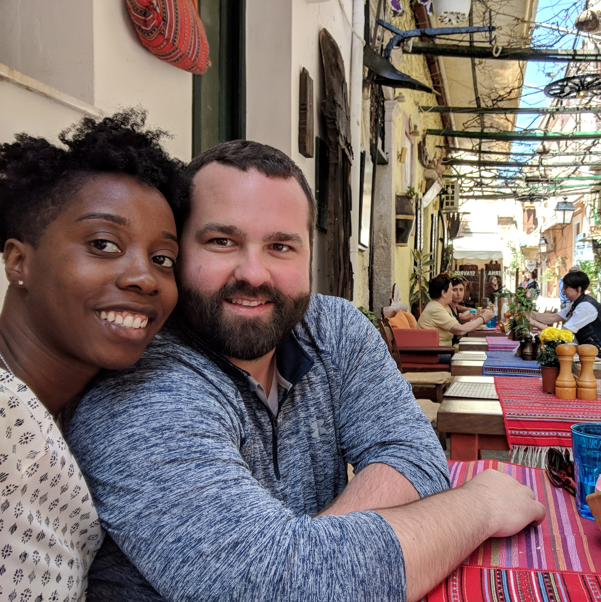
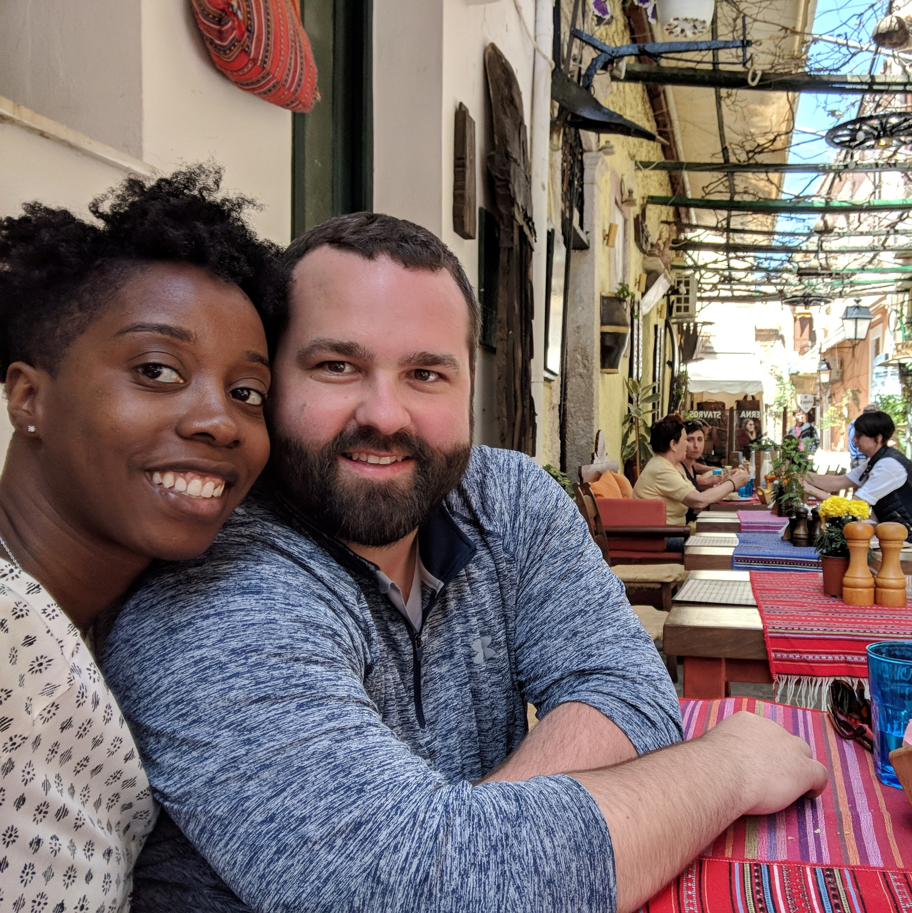

What word best describes my family?
Solid
Solid
What words of wisdom have been passed down to me from my family?
The respect for cooking and wood working.
The respect for cooking and wood working.
What are the beliefs about child rearing in your family?
Patience, Creativity, and Discipline are the three most important beliefs.
Patience, Creativity, and Discipline are the three most important beliefs.
What country, other than the United States, do I identify as the place of origin for my family?
Germany
Germany
What do I see as the value of education or teaching?
-Benjamin Franklin
An investment in knowledge pays the best interest.
-Benjamin Franklin
What word best describes my experience in school?
DETERMINATION
DETERMINATION
How do I learn best?
Practice, Time and Hands on Experiences
Practice, Time and Hands on Experiences
Who was my most influential teacher?
My most influential teacher was Dr. Warren McGovern, a math professor. He was fair, flexible, and challenging.
My most influential teacher was Dr. Warren McGovern, a math professor. He was fair, flexible, and challenging.
What culture other than my own, am I familiar?
I am familiar with immigrant culture to some extent. Many of my family members, loved ones, students, and friends are immigrants.
I am familiar with immigrant culture to some extent. Many of my family members, loved ones, students, and friends are immigrants.
What has been my most challenging cultural experience?
Navigating an interracial relationship.
Navigating an interracial relationship.
What is the one question I would like to ask a member of another culture?
How do you teach and learn from each other at home?
How do you teach and learn from each other at home?
What culture other than my own, would I like to know more about?
Graffiti Culture
Graffiti Culture
Whom do you respect and whom do you show respect?
Anyone who shows me their work ethic gets my respect. If I was to identify a celebrity that I respect it would be Elon Musk.
Anyone who shows me their work ethic gets my respect. If I was to identify a celebrity that I respect it would be Elon Musk.
What is my concept of beauty?
Humor, confidence, intelligence, empathy, and fun. Imperfection can be beautiful to me.
Humor, confidence, intelligence, empathy, and fun. Imperfection can be beautiful to me.
How do I like to spend my spare time?
I spend my spare time hiking, travelling, cooking, and with friends or family.
I spend my spare time hiking, travelling, cooking, and with friends or family.
What negative comment have you heard people make about a group and how did it make me feel?
Waiters often ask my girlfriend and I if we want separate checks. Any waiter that can't tell that we are a couple, I reduce the tip.
Waiters often ask my girlfriend and I if we want separate checks. Any waiter that can't tell that we are a couple, I reduce the tip.